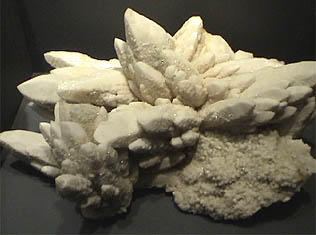

|
Quartz is silicon dioxide, SiO2. Quartz is abundant in the Earth's crust, being the chemically simplest form of the silicates. All the samples here are displayed in the Smithsonian Museum of Natural History. One of many varieties of quartz is an opaque white variety called milky quartz. The sample at right is about 12x8 cm and is from Mineral Park, Colorado.
|  |